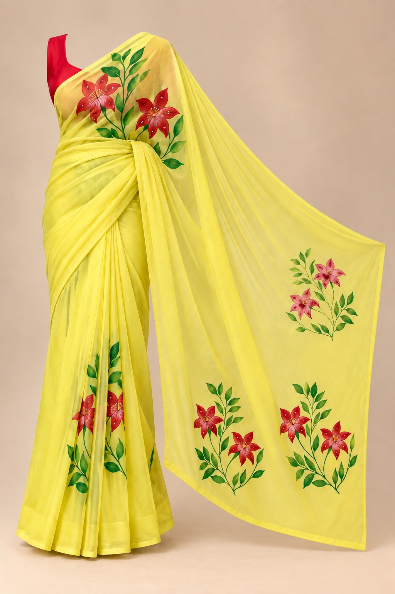

Design Reference 01 SAREE-01
Sunlit Liliesサンリット・リリーズ
明るいイエローのシルクに、
赤い花とグリーンの葉を軽やかに描いたデザイン。
鮮やかな色彩の中にも余白を残した、
明るく伸びやかな印象の一枚です。
Red florals and fresh green leaves are painted across a luminous yellow ground.
A bright, expressive design with generous open space that allows the hand-painted motifs to stand out.
- 素材 / Material
- シルク 100% / 100% Silk
- 制作 / Production
- 受注制作 / Made to Order
- 納期目安 / Estimated Timeline
- 約10週間 / Approx. 10 weeks
- 価格 / Price
- お問い合わせください / Price on inquiry
制作内容や配送状況により前後する場合があります。
Timing may vary depending on production requirements and shipping conditions.